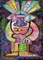
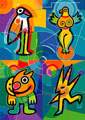

The Open Gallery
click thumbnail for full size image "Bernd Wachtmeister is one of those people who devote a great deal of time to analysing themselves in the context of their surroundings. Many of his feelings, impressions and thoughts find expression in his artistic work. They come to light, so to speak, through form and colour. For him, creating art is a statement of passion as well as purpose.
Bernd Wachtmeister


"It might not be immediately apparent when looking at his pictures that they have involved a high degree of effort on his part. It might also be possible that, at first sight, they seem somewhat immature, light-hearted, maybe even playfully naïve. However, when reflecting on their meaning as expressed in their titles, it will become evident that there is an ironic, critical depth to works that, on the face of it, may appear to be straightforward and friendly."